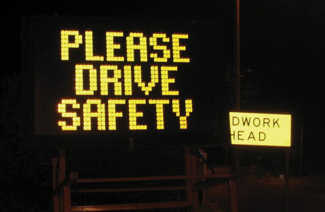

Just as a mason uses bricks to build sturdy homes, writers use words to build successful documents. Consider the construction of a building. Builders need to use tough, reliable materials to build a solid and structurally sound skyscraper. From the foundation to the roof and every floor in between, every part is necessary. Writers need to use strong, meaningful words from the first sentence to the last and in every sentence in between.
You already know many words that you use everyday as part of your writing and speaking vocabularyA collection of spoken and written words used by individuals or groups.. You probably also know that certain words fit better in certain situations. Letters, e-mails, and even quickly jotted grocery lists require the proper selection of vocabulary. Imagine you are writing a grocery list to purchase the ingredients for a recipe but accidentally write down cilantro when the recipe calls for parsley. Even though cilantro and parsley look remarkably alike, each produces a very different effect in food. This seemingly small error could radically alter the flavor of your dish!
Having a solid everyday vocabulary will help you while writing, but learning new words and avoiding common word errors will make a real impression on your readers. Experienced writers know that deliberate, careful word selection and usage can lead to more polished, more meaningful work. This chapter covers word choice and vocabulary-building strategies that will improve your writing.
Some words in English cause trouble for speakers and writers because these words share a similar pronunciation, meaning, or spelling with another word. These words are called commonly confused wordsWords that share a similar pronunciation, meaning, or spelling.. For example, read aloud the following sentences containing the commonly confused words new and knew:
I liked her new sweater.
I knew she would wear that sweater today.
These words may sound alike when spoken, but they carry entirely different usages and meanings. New is an adjective that describes the sweater, and knew is the past tense of the verb to know. To read more about adjectives, verbs, and other parts of speech see Chapter 2 "Writing Basics: What Makes a Good Sentence?".
New and knew are just two of the words that can be confusing because of their similarities. Familiarize yourself with the following list of commonly confused words. Recognizing these words in your own writing and in other pieces of writing can help you choose the correct word.
A, An, And
A (article). Used before a word that begins with a consonant.
a key, a mouse, a screen
An (article). Used before a word that begins with a vowel.
an airplane, an ocean, an igloo
And (conjunction). Connects two or more words together.
peanut butter and jelly, pen and pencil, jump and shout
Accept, Except
Accept (verb). Means to take or agree to something offered.
They accepted our proposal for the conference.
Except (conjunction). Means only or but.
We could fly there except the tickets cost too much.
Affect, Effect
Affect (verb). Means to create a change.
Hurricane winds affect the amount of rainfall.
Effect (noun). Means an outcome or result.
The heavy rains will have an effect on the crop growth.
Are, Our
Are (verb). A conjugated form of the verb to be.
My cousins are all tall and blonde.
Our (pronoun). Indicates possession, usually follows the pronoun we.
We will bring our cameras to take pictures.
By, Buy
By (preposition). Means next to.
My glasses are by the bed.
Buy (verb). Means to purchase.
I will buy new glasses after the doctor’s appointment.
Its, It’s
Its (pronoun). A form of it that shows possession.
The butterfly flapped its wings.
It’s (contraction). Joins the words it and is.
It’s the most beautiful butterfly I have ever seen.
Know, No
Know (verb). Means to understand or possess knowledge.
I know the male peacock sports the brilliant feathers.
No. Used to make a negative.
I have no time to visit the zoo this weekend.
Loose, Lose
Loose (adjective). Describes something that is not tight or is detached.
Without a belt, her pants are loose on her waist.
Lose (verb). Means to forget, to give up, or to fail to earn something.
She will lose even more weight after finishing the marathon training.
Of, Have
Of (preposition). Means from or about.
I studied maps of the city to know where to rent a new apartment.
Have (verb). Means to possess something.
I have many friends to help me move.
Have (linking verb). Used to connect verbs.
I should have helped her with that heavy box.
Quite, Quiet, Quit
Quite (adverb). Means really or truly.
My work will require quite a lot of concentration.
Quiet (adjective). Means not loud.
I need a quiet room to complete the assignments.
Quit (verb). Means to stop or to end.
I will quit when I am hungry for dinner.
Right, Write
Right (adjective). Means proper or correct.
When bowling, she practices the right form.
Right (adjective). Also means the opposite of left.
The ball curved to the right and hit the last pin.
Write (verb). Means to communicate on paper.
After the team members bowl, I will write down their scores.
Set, Sit
Set (verb). Means to put an item down.
She set the mug on the saucer.
Set (noun). Means a group of similar objects.
All the mugs and saucers belonged in a set.
Sit (verb). Means to lower oneself down on a chair or another place
I’ll sit on the sofa while she brews the tea.
Suppose, Supposed
Suppose (verb). Means to think or to consider
I suppose I will bake the bread, because no one else has the recipe.
Suppose (verb). Means to suggest.
Suppose we all split the cost of the dinner.
Supposed (verb). The past tense form of the verb suppose, meaning required or allowed.
She was supposed to create the menu.
Than, Then
Than (conjunction). Used to connect two or more items when comparing
Registered nurses require less schooling than doctors.
Then (adverb). Means next or at a specific time.
Doctors first complete medical school and then obtain a residency.
Their, They’re, There
Their (pronoun). A form of they that shows possession.
The dog walker feeds their dogs everyday at two o’clock.
They’re (contraction). Joins the words they and are.
They’re the sweetest dogs in the neighborhood.
There (adverb). Indicates a particular place.
The dogs’ bowls are over there, next to the pantry.
There (pronoun). Indicates the presence of something
There are more treats if the dogs behave.
To, Two, Too
To (preposition). Indicates movement.
Let’s go to the circus.
To. A word that completes an infinitive verb.
to play, to ride, to watch.
Two. The number after one. It describes how many.
Two clowns squirted the elephants with water.
Too (adverb). Means also or very.
The tents were too loud, and we left.
Use, Used
Use (verb). Means to apply for some purpose.
We use a weed whacker to trim the hedges.
Used. The past tense form of the verb to use
He used the lawnmower last night before it rained.
Used to. Indicates something done in the past but not in the present
He used to hire a team to landscape, but now he landscapes alone.
Who’s, Whose
Who’s (contraction). Joins the words who and either is or has.
Who’s the new student? Who’s met him?
Whose (pronoun). A form of who that shows possession.
Whose schedule allows them to take the new student on a campus tour?
Your, You’re
Your (pronoun). A form of you that shows possession.
Your book bag is unzipped.
You’re (contraction). Joins the words you and are.
You’re the girl with the unzipped book bag.
The English language contains so many words; no one can say for certain how many words exist. In fact, many words in English are borrowed from other languages. Many words have multiple meanings and forms, further expanding the immeasurable number of English words. Although the list of commonly confused words serves as a helpful guide, even these words may have more meanings than shown here. When in doubt, consult an expert: the dictionary!
Complete the following sentences by selecting the correct word.
When writing, you need to choose the correct word according to its spelling and meaning in the context. Not only does selecting the correct word improve your vocabulary and your writing, but it also makes a good impression on your readers. It also helps reduce confusion and improve clarity. The following strategies can help you avoid misusing confusing words.
Figure 4.1 A Commonly Misused Word on a Public Sign
Commonly confused words appear in many locations, not just at work or at school. Be on the lookout for misused words wherever you find yourself throughout the day. Make a mental note of the error and remember its correction for your own pieces of writing.
All employers value effective communication. From an application to an interview to the first month on the job, employers pay attention to your vocabulary. You do not need a large vocabulary to succeed, but you do need to be able to express yourself clearly and avoid commonly misused words.
When giving an important presentation on the effect of inflation on profit margins, you must know the difference between effect and affect and choose the correct word. When writing an e-mail to confirm deliveries, you must know if the shipment will arrive in to days, too days, or two days. Confusion may arise if you choose the wrong word.
Consistently using the proper words will improve your communication and make a positive impression on your boss and colleagues.
The following paragraph contains eleven errors. Find each misused word and correct it by adding the proper word.
The original United States Declaration of Independence sets in a case at the Rotunda for the Charters of Freedom as part of the National Archives in Washington, DC. Since 1952, over one million visitors each year of passed through the Rotunda too snap a photograph to capture they’re experience. Although signs state, “No Flash Photography,” forgetful tourists leave the flash on, an a bright light flickers for just a millisecond. This millisecond of light may not seem like enough to effect the precious document, but supposed how much light could be generated when all those milliseconds are added up. According to the National Archives administrators, its enough to significantly damage the historic document. So, now, the signs display quit a different message: “No Photography.” Visitors continue to travel to see the Declaration that began are country, but know longer can personal pictures serve as mementos. The administrators’ compromise, they say, is a visit to the gift shop for a preprinted photograph.
Collaboration
Please share with a classmate and compare your answers.
Review the latest assignment you completed for school or for work. Does it contain any commonly confused words? Circle each example and use the circled words to begin your own checklist of commonly confused words. Continue to add to your checklist each time you complete an assignment and find a misused word.